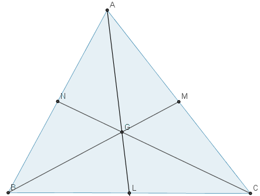
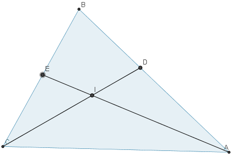

几何篇5: 三角形
正弦定理、余弦定理
三角形的面积
红心大战！——三角形的心
5.3.1 重心：三条中线的交点

如图, M, N 分别是 AC, AB 的中点.
设 BM 与 CN 交于 G, AG 与 BC 交于 L.
由 Ceva 定理知, `(AN * BL * CM) / (NB * LC * MA) = 1`,
所以 BL = LC, 从而 G 就是三角形 ABC 的重心.
容易看出, 相交于 G 的三条直线将三角形 ABC 分成了面积相等的六个小
三角形. 注意到 `S_(ABG) = 2S_(LBG)`, 因此 AG = 2GL.
同理 BG = 2GM, CG = 2GN. 我们得到:
三角形的重心分三条中线的长度为 1:2. 所以
`
{:( vec(OG)
, = vec(OA) + vec(AG) = vec(OA) + 2/3 vec(AL)
),(, = vec(OA) + 2/3 * 1/2 (vec(AB) + vec(AC))
),(, = vec(OA) + 1/3 (vec(OB) - vec(OA) + vec(OC) - vec(OA))
),(, = 1/3 (vec(OA) + vec(OB) + vec(OC)).
):}`
这就是三角形重心的坐标.
在上面的计算过程中, 我们得到了
`vec(AG) = 1/3 (vec(AB) + vec(AC))`.
因此
` vec(AG) + vec(BG) + vec(CG)
= 1/3 ( vec(AB) + vec(AC) + vec(BA)
+ vec(BC) + vec(CA) + vec(CB) )
= vec 0`.
G5.3.2 内心: 三条角平分线的交点

如图，设 `BC`, `CA`, `AB` 的长分别是 `a`, `b`, `c`.
`CD` 平分 `/_ACB`, 交 `AB` 于 `D`.
`AE` 平分 `/_CAB`, 交 `BC` 于 `E`, 交 `CD` 于 `I`.
设 `l` 是过角的顶点的直线, 由于以下三个命题等价:
- `l` 平分角;
- `l` 上任意一点到角两边的距离相等;
- `l` 上存在一点到角两边的距离相等.
易知 `BI` 平分 `/_ABC`.
所以 `I` 就是三角形 `ABC` 的内心.
以 `C` 为原点, `vec(CA)`, `vec(CB)` 为一组基底, 建立仿射坐标系.
因为角平分线上的点到角两边的距离相等, 所以
`AD:DB = S_(ACD):S_(BCD) = b:a`.
所以
`
{:( vec(CD)
, = vec(CA) + b/(a+b) vec(AB)
),(, = (1,0) + b/(a+b) (-1,1)
),(, = ( a/(a+b) ,b/(a+b) ).
):}`
类似地,
`vec(AE) = ( -1, b/(b+c) )`.
又设 `vec(CI) = (lambda, mu)`,
则由 `C`, `I`, `D` 共线和 `A`, `I`, `E` 共线知,
这等价于这两个外积在 `z` 轴的分量为零:
`
{( | (lambda, a), (mu, b) | = 0;
),( | ( lambda-1, -(b+c) ), (mu, b)| = 0.
):}`
即
`{
( b lambda - a mu = 0;
),( b lambda + (b+c) mu = b.
):}`
解得
`vec(CI) = (lambda, mu) = 1/(a+b+c) (a,b)`.
现建立以 `O` 为原点的直角坐标系, 则
`
{:(, vec(OI)
= vec(OC) + vec(CI)
),( =, vec(OC) + 1/(a+b+c) (a vec(CA) + b vec(CB))
),( =, vec(OC) + 1/(a+b+c) [a (vec(OA) - vec(OC))
+ b (vec(OB) - vec(OC))]
),( =, 1/(a+b+c) (a vec(OA) + b vec(OB) + c vec(OC)).
):}`
这就是三角形内心的坐标.
G5.3.3 外心: 三边中垂线的交点
如图, `AB`, `AC` 的垂直平分线相交于点 `O`,
垂足分别为 `D`, `E`. 过 `O` 作 `BC` 的垂线, 垂足为 `F`.
由于对线段 `m` 及其垂线 `l`, 以下三个命题等价:
- `l` 垂直平分 `m`;
- `l` 上任意一点到 `m` 的两个端点距离相等;
- `l` 上存在一点到 `m` 的两个端点距离相等.
容易推出 `OF` 是 `BC` 的垂直平分线.
所以 `O` 就是三角形 `ABC` 的外心.
求点 `O` 的坐标, 即求过 `ABC` 三点的圆的圆心坐标.
因为此圆的方程为
`|
( x^2 + y^2, x, y, 1 ),
( x_A^2 + y_A^2, x_A, y_A, 1 ),
( x_B^2 + y_B^2, x_B, y_B, 1 ),
( x_C^2 + y_C^2, x_C, y_C, 1 )
| = 0`,
(见...), 所以点 `O` 的坐标为
`(-|
( x_A^2 + y_A^2, y_A, 1 ),
( x_B^2 + y_B^2, y_B, 1 ),
( x_C^2 + y_C^2, y_C, 1 )
|,
|
( x_A^2 + y_A^2, x_A, 1 ),
( x_B^2 + y_B^2, x_B, 1 ),
( x_C^2 + y_C^2, x_C, 1 )
|)`.